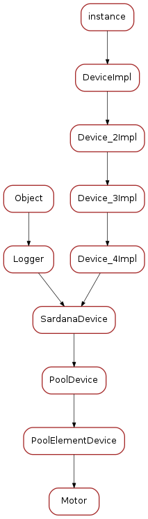

Motor¶
The sardana tango motor module
Classes
Motor¶
-
class
Motor(dclass, name)[source]¶ Bases:
sardana.tango.pool.PoolDevice.PoolElementDeviceThe tango motor device class. This class exposes through a tango device the sardana motor (
PoolMotor).The states
The motor interface knows five states which are ON, MOVING, ALARM, FAULT and UNKNOWN. A motor device is in MOVING state when it is moving! It is in ALARM state when it has reached one of the limit switches and is in FAULT if its controller software is not available (impossible to load it) or if a fault is reported from the hardware controller. The motor is in the UNKNOWN state if an exception occurs during the communication between the pool and the hardware controller. When the motor is in ALARM state, its status will indicate which limit switches is active.
The commands
The motor interface supports 3 commands on top of the Tango classical Init, State and Status commands. These commands are summarized in the following table:
Command name Input data type Output data type Stop void void Abort void void DefinePosition Tango::DevDouble void SaveConfig void void MoveRelative Tango::DevDouble void - Stop : It stops a running motion. This command does not have input or output argument.
- Abort : It aborts a running motion. This command does not have input or output argument.
- DefinePosition : Loads a position into controller. It has one input argument which is the new position value (a double). It is allowed only in the ON or ALARM states. The unit used for the command input value is the physical unit: millimeters or milli-radians. It is always an absolute position.
- SaveConfig : Write some of the motor parameters in database. Today, it writes the motor acceleration, deceleration, base_rate and velocity into database as motor device properties. It is allowed only in the ON or ALARM states
- MoveRelative : Moves the motor by a relative to the current position distance. It has one input argument which is the relative distance (a double). It is allowed only in the ON or ALARM states. The unit used for the command input value is the physical unit: millimeters or milli-radians.
The classical Tango Init command destroys the motor and re-create it.
The attributes
The motor interface supports several attributes which are summarized in the following table:
Name Data type Data format Writable Memorized Operator/Expert Position Tango::DevDouble Scalar R/W No * Operator DialPosition Tango::DevDouble Scalar R No Expert Offset Tango::DevDouble Scalar R/W Yes Expert Acceleration Tango::DevDouble Scalar R/W Yes Expert Base_rate Tango::DevDouble Scalar R/W Yes Expert Deceleration Tango::DevDouble Scalar R/W Yes Expert Velocity Tango::DevDouble Scalar R/W Yes Expert Limit_switches Tango::DevBoolean Spectrum R No Expert SimulationMode Tango::DevBoolean Scalar R No Expert Step_per_unit Tango::DevDouble Scalar R/W Yes Expert Backlash Tango::DevLong Scalar R/W Yes Expert Position : This is read-write scalar double attribute. With the classical Tango min_value and max_value attribute properties, it is easy to define authorized limit for this attribute. See the definition of the DialPosition and Offset attributes to get a precise definition of the meaning of this attribute. It is not allowed to read or write this attribute when the motor is in FAULT or UNKNOWN state. It is also not possible to write this attribute when the motor is already MOVING. The unit used for this attribute is the physical unit e.g. millimeters or milli-radian. It is always an absolute position .
DialPosition : This attribute is the motor dial position. The following formula links together the Position, DialPosition, Sign and Offset attributes:
Position = Sign * DialPosition + Offset
This allows to have the motor position centered around any position defined by the Offset attribute (classically the X ray beam position). It is a read only attribute. To set the motor position, the user has to use the Position attribute. It is not allowed to read this attribute when the motor is in FAULT or UNKNOWN mode. The unit used for this attribute is the physical unit: millimeters or milli-radian. It is also always an absolute position.
Offset : The offset to be applied in the motor position computation. By default set to 0. It is a memorized attribute. It is not allowed to read or write this attribute when the motor is in FAULT, MOVING or UNKNOWN mode.
Acceleration : This is an expert read-write scalar double attribute. This parameter value is written in database when the SaveConfig command is executed. It is not allowed to read or write this attribute when the motor is in FAULT or UNKNOWN state.
Deceleration : This is an expert read-write scalar double attribute. This parameter value is written in database when the SaveConfig command is executed. It is not allowed to read or write this attribute when the motor is in FAULT or UNKNOWN state.
Base_rate : This is an expert read-write scalar double attribute. This parameter value is written in database when the SaveConfig command is executed. It is not allowed to read or write this attribute when the motor is in FAULT or UNKNOWN state.
Velocity : This is an expert read-write scalar double attribute. This parameter value is written in database when the SaveConfig command is executed. It is not allowed to read or write this attribute when the motor is in FAULT or UNKNOWN state.
Limit_switches : Three limit switches are managed by this attribute. Each of the switch are represented by a boolean value: False means inactive while True means active. It is a read only attribute. It is not possible to read this attribute when the motor is in UNKNOWN mode. It is a spectrum attribute with 3 values which are:
- Data[0] : The Home switch value
- Data[1] : The Upper switch value
- Data[2] : The Lower switch value
SimulationMode : This is a read only scalar boolean attribute. When set, all motion requests are not forwarded to the software controller and then to the hardware. When set, the motor position is simulated and is immediately set to the value written by the user. To set this attribute, the user has to used the pool device Tango interface. The value of the position, acceleration, deceleration, base_rate, velocity and offset attributes are memorized at the moment this attribute is set. When this mode is turned off, if the value of any of the previously memorized attributes has changed, it is reapplied to the memorized value. It is not allowed to read this attribute when the motor is in FAULT or UNKNOWN states.
Step_per_unit : This is the number of motor step per millimeter or per degree. It is a memorized attribute. It is not allowed to read or write this attribute when the motor is in FAULT or UNKNOWN mode. It is also not allowed to write this attribute when the motor is MOVING. The default value is 1.
Backlash : If this attribute is defined to something different than 0, the motor will always stop the motion coming from the same mechanical direction. This means that it could be possible to ask the motor to go a little bit after the desired position and then to return to the desired position. The attribute value is the number of steps the motor will pass the desired position if it arrives from the “wrong” direction. This is a signed value. If the sign is positive, this means that the authorized direction to stop the motion is the increasing motor position direction. If the sign is negative, this means that the authorized direction to stop the motion is the decreasing motor position direction. It is a memorized attribute. It is not allowed to read or write this attribute when the motor is in FAULT or UNKNOWN mode. It is also not allowed to write this attribute when the motor is MOVING. Some hardware motor controllers are able to manage this backlash feature. If it is not the case, the motor interface will implement this behavior.
All the motor devices will have the already described attributes but some hardware motor controller supports other features which are not covered by this list of pre-defined attributes. Using Tango dynamic attribute creation, a motor device may have extra attributes used to get/set the motor hardware controller specific features. These are the attributes specified on the controller with
axis_attribues.The properties
- Sleep_bef_last_read : This property exposes the motor instability time. It defines the time in milli-second that the software managing a motor movement will wait between it detects the end of the motion and the last motor position reading.
Getting motor state and limit switches using event
The simplest way to know if a motor is moving is to survey its state. If the motor is moving, its state will be MOVING. When the motion is over, its state will be back to ON (or ALARM if a limit switch has been reached). The pool motor interface allows client interested by motor state or motor limit switches value to use the Tango event system subscribing to motor state change event. As soon as a motor starts a motion, its state is changed to MOVING and an event is sent. As soon as the motion is over, the motor state is updated and another event is sent. In the same way, as soon as a change in the limit switches value is detected, a change event is sent to client(s) which have subscribed to change event on the Limit_Switches attribute.
Reading the motor position attribute
For each motor, the key attribute is its position. Special care has been taken on this attribute management. When the motor is not moving, reading the Position attribute will generate calls to the controller and therefore hardware access. When the motor is moving, its position is automatically read every 100 milli-seconds and stored in the cache. This means that a client reading motor Position attribute while the motor is moving will get the position from the cache and will not generate extra controller calls. It is also possible to get a motor position using the Tango event system. When the motor is moving, an event is sent to the registered clients when the change event criterion is true. By default, this change event criterion is set to be a difference in position of 1. It is tunable on a motor basis using the classical motor Position attribute abs_change property or at the pool device basis using its DefaultMotPos_AbsChange property. Anyway, not more than 10 events could be sent by second. Once the motion is over, the motor position is made unavailable from the Tango polling buffer and is read a last time after a tunable waiting time (Sleep_bef_last_read property). A forced change event with this value is sent to clients using events.
-
motor¶
-
is_Position_allowed(req_type)¶
-
is_Acceleration_allowed(req_type)¶
-
is_Deceleration_allowed(req_type)¶
-
is_Base_rate_allowed(req_type)¶
-
is_Velocity_allowed(req_type)¶
-
is_Offset_allowed(req_type)¶
-
is_DialPosition_allowed(req_type)¶
-
is_Step_per_unit_allowed(req_type)¶
-
is_Backlash_allowed(req_type)¶
-
is_Sign_allowed(req_type)¶
-
is_Limit_switches_allowed(req_type)¶
MotorClass¶

-
class
MotorClass(name)[source]¶ Bases:
sardana.tango.pool.PoolDevice.PoolElementDeviceClass-
class_property_list= {}¶
-
device_property_list= {'_Acceleration': [tango._tango.CmdArgType.DevDouble, '', -1], '_Base_rate': [tango._tango.CmdArgType.DevDouble, '', -1], 'Sleep_bef_last_read': [tango._tango.CmdArgType.DevLong, 'Number of mS to sleep before the last read during a motor movement', 0], 'Instrument_id': [tango._tango.CmdArgType.DevLong64, 'Controller ID', [0]], 'Axis': [tango._tango.CmdArgType.DevLong64, 'Axis in the controller', [0]], 'Id': [tango._tango.CmdArgType.DevLong64, 'Internal ID', 0], 'Force_HW_Read': [tango._tango.CmdArgType.DevBoolean, 'Force a hardware read of value even when in operation (motion/acquisition', False], '_Deceleration': [tango._tango.CmdArgType.DevDouble, '', -1], '_Velocity': [tango._tango.CmdArgType.DevDouble, '', -1], 'Ctrl_id': [tango._tango.CmdArgType.DevLong64, 'Controller ID', [0]]}¶
-
cmd_list= {'Abort': [[tango._tango.CmdArgType.DevVoid, ''], [tango._tango.CmdArgType.DevVoid, '']], 'SaveConfig': [[tango._tango.CmdArgType.DevVoid, ''], [tango._tango.CmdArgType.DevVoid, '']], 'Stop': [[tango._tango.CmdArgType.DevVoid, ''], [tango._tango.CmdArgType.DevVoid, '']], 'MoveRelative': [[tango._tango.CmdArgType.DevDouble, 'amount to move'], [tango._tango.CmdArgType.DevVoid, '']], 'DefinePosition': [[tango._tango.CmdArgType.DevDouble, 'New position'], [tango._tango.CmdArgType.DevVoid, '']], 'Restore': [[tango._tango.CmdArgType.DevVoid, ''], [tango._tango.CmdArgType.DevVoid, '']]}¶
-
attr_list= {'Instrument': [[tango._tango.CmdArgType.DevString, tango._tango.AttrDataFormat.SCALAR, tango._tango.AttrWriteType.READ_WRITE], {'Display level': tango._tango.DispLevel.EXPERT, 'label': 'Instrument'}], 'SimulationMode': [[tango._tango.CmdArgType.DevBoolean, tango._tango.AttrDataFormat.SCALAR, tango._tango.AttrWriteType.READ_WRITE], {'label': 'Simulation mode'}]}¶
-
standard_attr_list= {'Base_rate': [[tango._tango.CmdArgType.DevDouble, tango._tango.AttrDataFormat.SCALAR, tango._tango.AttrWriteType.READ_WRITE], {'label': 'Base rate', 'Memorized': 'true'}], 'Limit_switches': [[tango._tango.CmdArgType.DevBoolean, tango._tango.AttrDataFormat.SPECTRUM, tango._tango.AttrWriteType.READ, 3], {'label': 'Limit switches (H,U,L)', 'description': "This attribute is the motor limit switches state. It's an array with 3 \nelements which are:\n0 - The home switch\n1 - The upper limit switch\n2 - The lower limit switch\nFalse means not active. True means active"}], 'Step_per_unit': [[tango._tango.CmdArgType.DevDouble, tango._tango.AttrDataFormat.SCALAR, tango._tango.AttrWriteType.READ_WRITE], {'Display level': tango._tango.DispLevel.EXPERT, 'label': 'Steps p/ unit', 'Memorized': 'true'}], 'Position': [[tango._tango.CmdArgType.DevDouble, tango._tango.AttrDataFormat.SCALAR, tango._tango.AttrWriteType.READ_WRITE], {'abs_change': '1.0'}], 'Velocity': [[tango._tango.CmdArgType.DevDouble, tango._tango.AttrDataFormat.SCALAR, tango._tango.AttrWriteType.READ_WRITE], {'Memorized': 'true'}], 'Acceleration': [[tango._tango.CmdArgType.DevDouble, tango._tango.AttrDataFormat.SCALAR, tango._tango.AttrWriteType.READ_WRITE], {'Memorized': 'true'}], 'Sign': [[tango._tango.CmdArgType.DevShort, tango._tango.AttrDataFormat.SCALAR, tango._tango.AttrWriteType.READ_WRITE], {'Display level': tango._tango.DispLevel.EXPERT, 'Memorized': 'true'}], 'DialPosition': [[tango._tango.CmdArgType.DevDouble, tango._tango.AttrDataFormat.SCALAR, tango._tango.AttrWriteType.READ], {'Display level': tango._tango.DispLevel.EXPERT, 'label': 'Dial position'}], 'Offset': [[tango._tango.CmdArgType.DevDouble, tango._tango.AttrDataFormat.SCALAR, tango._tango.AttrWriteType.READ_WRITE], {'Display level': tango._tango.DispLevel.EXPERT, 'Memorized': 'true'}], 'Deceleration': [[tango._tango.CmdArgType.DevDouble, tango._tango.AttrDataFormat.SCALAR, tango._tango.AttrWriteType.READ_WRITE], {'Memorized': 'true'}], 'Backlash': [[tango._tango.CmdArgType.DevLong, tango._tango.AttrDataFormat.SCALAR, tango._tango.AttrWriteType.READ_WRITE], {'Display level': tango._tango.DispLevel.EXPERT, 'Memorized': 'true'}]}¶
-